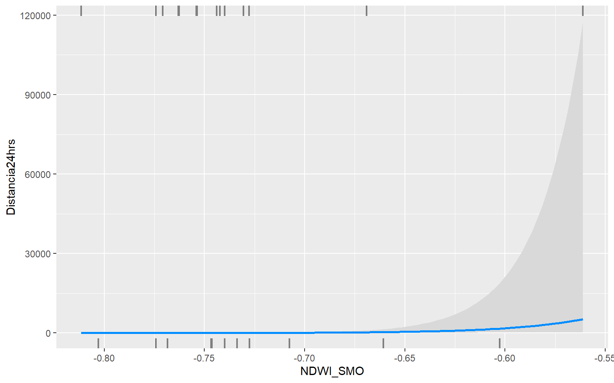

Distancia recorrida Incilius spiculatus
Preparar los datos
Importar dataframe
Importar datos del archivo excel
observacion del raw data
## # A tibble: 30 × 26
## Especie Sitio Individuo Sexo Edad Distancia24hrs Distancia total recc…¹
## <chr> <chr> <dbl> <chr> <chr> <chr> <dbl>
## 1 Incilius s… Cons… 1 Juve… Juve… . 85.9
## 2 Incilius s… Pert… 2 Juve… Juve… . 36.3
## 3 Incilius s… Pert… 3 Juve… Juve… . 27.2
## 4 Incilius s… Pert… 4 Macho Adul… 18.46 18.5
## 5 Incilius s… Cons… 5 Macho Adul… 39.27333333 121.
## 6 Incilius s… Cons… 6 Macho Adul… 26.4 143.
## 7 Incilius s… Cons… 7 Hemb… Adul… 32.445 140.
## 8 Incilius s… Cons… 8 Macho Adul… 33.0200000000… 66.0
## 9 Incilius s… Pert… 9 Macho Adul… 25.67 87.6
## 10 Incilius s… Pert… 10 Hemb… Adul… 51.0349999999… 246.
## # ℹ 20 more rows
## # ℹ abbreviated name: ¹`Distancia total reccorida`
## # ℹ 19 more variables: Mes <chr>, Temporada <chr>, LHC <dbl>, Peso <dbl>,
## # `RESIDUOS POR SEXO` <dbl>, Observaciones_Inmovil <dbl>, Moviendose <dbl>,
## # `Total de observaciones` <dbl>, `% Inmovil` <dbl>, `% Moviendose` <dbl>,
## # MCP_Area_m <dbl>, MCP_Perimetro <dbl>, NDVI_SMO <dbl>, EVI_SMO <dbl>,
## # NDWI_SMO <dbl>, NDMI_SMO <dbl>, LST_SMO <dbl>, CME_SMO_15 <dbl>, …Con la funcion str() se puede ver la estructura de un
dataframe y la informacion relevante de este
## tibble [30 × 26] (S3: tbl_df/tbl/data.frame)
## $ Especie : chr [1:30] "Incilius spiculatus" "Incilius spiculatus" "Incilius spiculatus" "Incilius spiculatus" ...
## $ Sitio : chr [1:30] "Conservado" "Perturbado" "Perturbado" "Perturbado" ...
## $ Individuo : num [1:30] 1 2 3 4 5 6 7 8 9 10 ...
## $ Sexo : chr [1:30] "Juvenil" "Juvenil" "Juvenil" "Macho" ...
## $ Edad : chr [1:30] "Juvenil" "Juvenil" "Juvenil" "Adulto" ...
## $ Distancia24hrs : chr [1:30] "." "." "." "18.46" ...
## $ Distancia total reccorida: num [1:30] 85.9 36.3 27.2 18.5 121.4 ...
## $ Mes : chr [1:30] "Marzo" "Octubre" "Noviembre" "Diciembre" ...
## $ Temporada : chr [1:30] "Secas" "Secas" "Secas" "Secas" ...
## $ LHC : num [1:30] 5.92 5.47 6 7.23 7.71 ...
## $ Peso : num [1:30] 19.4 14.9 29.5 31 50.5 ...
## $ RESIDUOS POR SEXO : num [1:30] -4.528 0.684 3.845 -7.954 2.235 ...
## $ Observaciones_Inmovil : num [1:30] 1 1 0 0 2 14 2 6 2 1 ...
## $ Moviendose : num [1:30] 10 2 3 3 14 14 15 7 11 21 ...
## $ Total de observaciones : num [1:30] 11 3 3 3 16 28 17 13 13 22 ...
## $ % Inmovil : num [1:30] 9.09 33.33 0 0 12.5 ...
## $ % Moviendose : num [1:30] 90.9 66.7 100 100 87.5 ...
## $ MCP_Area_m : num [1:30] 340.8 162.9 80.9 15.2 234 ...
## $ MCP_Perimetro : num [1:30] 74.8 64.5 45.8 23.4 64.2 ...
## $ NDVI_SMO : num [1:30] 0.851 0.831 0.834 0.829 0.568 ...
## $ EVI_SMO : num [1:30] 0.642 0.583 0.58 0.586 0.487 ...
## $ NDWI_SMO : num [1:30] -0.79 -0.788 -0.773 -0.763 -0.561 ...
## $ NDMI_SMO : num [1:30] 0.4 0.354 0.4 0.383 0.268 ...
## $ LST_SMO : num [1:30] 19.2 18.8 18.5 18.8 18 ...
## $ CME_SMO_15 : num [1:30] 1531 1501 1311 1305 1532 ...
## $ Altura de arbol : num [1:30] 14.93 19.44 4.23 8.31 7.44 ...La base de datos completa
Con esto ya sabemos de que forma organizarnos, asi que para un facil acceso a los nombres de las variables reemplazaremos los espacios por giones, asi evitamos que salgan comillas al seleccionarlas mediante $
> vremove <- c(" ")
> vreplace <- c("_")
>
> names(df1) <- gsub(vremove, vreplace, names(df1))
> names(df1)## [1] "Especie" "Sitio"
## [3] "Individuo" "Sexo"
## [5] "Edad" "Distancia24hrs"
## [7] "Distancia_total_reccorida" "Mes"
## [9] "Temporada" "LHC"
## [11] "Peso" "RESIDUOS_POR_SEXO"
## [13] "Observaciones_Inmovil" "Moviendose"
## [15] "Total_de_observaciones" "%_Inmovil"
## [17] "%_Moviendose" "MCP_Area_m"
## [19] "MCP_Perimetro" "NDVI_SMO"
## [21] "EVI_SMO" "NDWI_SMO"
## [23] "NDMI_SMO" "LST_SMO"
## [25] "CME_SMO_15" "Altura_de_arbol"Seleccion variables
Ya con los nombres “corregidos” vamos a seleccionar las variables que nos interesan, en este caso las que nos indicaron
> #seleccionar variables que interesan al tronco
> dfdatos <- df1 %>%
+ select(Sitio, Sexo, Distancia24hrs, Distancia_total_reccorida, Temporada,
+ NDVI_SMO:Altura_de_arbol)
>
> str(dfdatos)## tibble [30 × 12] (S3: tbl_df/tbl/data.frame)
## $ Sitio : chr [1:30] "Conservado" "Perturbado" "Perturbado" "Perturbado" ...
## $ Sexo : chr [1:30] "Juvenil" "Juvenil" "Juvenil" "Macho" ...
## $ Distancia24hrs : chr [1:30] "." "." "." "18.46" ...
## $ Distancia_total_reccorida: num [1:30] 85.9 36.3 27.2 18.5 121.4 ...
## $ Temporada : chr [1:30] "Secas" "Secas" "Secas" "Secas" ...
## $ NDVI_SMO : num [1:30] 0.851 0.831 0.834 0.829 0.568 ...
## $ EVI_SMO : num [1:30] 0.642 0.583 0.58 0.586 0.487 ...
## $ NDWI_SMO : num [1:30] -0.79 -0.788 -0.773 -0.763 -0.561 ...
## $ NDMI_SMO : num [1:30] 0.4 0.354 0.4 0.383 0.268 ...
## $ LST_SMO : num [1:30] 19.2 18.8 18.5 18.8 18 ...
## $ CME_SMO_15 : num [1:30] 1531 1501 1311 1305 1532 ...
## $ Altura_de_arbol : num [1:30] 14.93 19.44 4.23 8.31 7.44 ...Al importar archivos es comun que no tengan el tipo de dato correcto para poder realizar operaciones sobre ellos, por lo que es necesario asegurarse de que cada variable tenga el tipo correcto
Tambien crearemos variables dummy para las variables categricas
Construir variables dummy
> dfdatos <- dfdatos %>%
+ mutate(Distancia24hrs = as.numeric(Distancia24hrs),
+ Sitio_cons = ifelse(Sitio == "Conservado", 1, 0),
+ Sexo_macho = ifelse(Sexo == "Macho", 1, 0),
+ Sex_hembra = ifelse(Sexo == "Hembra", 1, 0),
+ Temporada_seca = ifelse(Temporada == "Secas", 1, 0)) %>%
+ select(Distancia24hrs, Distancia_total_reccorida, NDVI_SMO:Altura_de_arbol,
+ Sitio_cons:Temporada_seca)
>
> #verificar que todo este correcto
> str(dfdatos)## tibble [30 × 13] (S3: tbl_df/tbl/data.frame)
## $ Distancia24hrs : num [1:30] NA NA NA 18.5 39.3 ...
## $ Distancia_total_reccorida: num [1:30] 85.9 36.3 27.2 18.5 121.4 ...
## $ NDVI_SMO : num [1:30] 0.851 0.831 0.834 0.829 0.568 ...
## $ EVI_SMO : num [1:30] 0.642 0.583 0.58 0.586 0.487 ...
## $ NDWI_SMO : num [1:30] -0.79 -0.788 -0.773 -0.763 -0.561 ...
## $ NDMI_SMO : num [1:30] 0.4 0.354 0.4 0.383 0.268 ...
## $ LST_SMO : num [1:30] 19.2 18.8 18.5 18.8 18 ...
## $ CME_SMO_15 : num [1:30] 1531 1501 1311 1305 1532 ...
## $ Altura_de_arbol : num [1:30] 14.93 19.44 4.23 8.31 7.44 ...
## $ Sitio_cons : num [1:30] 1 0 0 0 1 1 1 1 0 0 ...
## $ Sexo_macho : num [1:30] 0 0 0 1 1 1 0 1 1 0 ...
## $ Sex_hembra : num [1:30] 0 0 0 0 0 0 1 0 0 1 ...
## $ Temporada_seca : num [1:30] 1 1 1 1 0 0 0 0 0 0 ...Veamos como quedaron nuestro datos ya preparados para los analisis, para este caso son pocas obsevaciones y pocas variables, pero suponiendo que fuesen mas añadiremos unos filtros para poder facilmente realizar una exploracion de los datos mediante la tabla.
Se realizara el analisis para la distancia por dia
$Distancia24hrsy para la distancia total recorridaDistancia_total_recorrida
Analisis distancia por día recorrida
Construiremos el dataframe que utilizaremos para este analisis de distancia por dia
Veamos una primera impresion de la distribucion de los datos
> hist(x = dfdatos1$Distancia24hrs, breaks = 7, xlab = "Distancia recorrida", main = "Distribucion datos 24hrs")Estandarización
Para el analisis de correlacion no es necesario estandarizar las variables, sin embargo es comun hacerlo pues se puede comparar mas facilmente las variables al estar poder medirlas en terminos de desviaciones estandar
Crearemos una funcion que a cada valor reste la media de su conjunto y el resultado lo divida entre la desviacion estandar del mismo
Y aplicaremos dicha funcion a todas las variables numericas guardandolo en otro datframe, porque los datos originales los utilizaremos al final
> dfdatos1Est <- dfdatos1
> dfdatos1Est[c(2:8)] <- apply(X = dfdatos1Est[c(2:8)], MARGIN = 2, FUN = Estandarizar)
> dfdatos1Est## # A tibble: 30 × 11
## Distancia24hrs NDVI_SMO EVI_SMO NDWI_SMO NDMI_SMO LST_SMO CME_SMO_15
## <dbl> <dbl> <dbl> <dbl> <dbl> <dbl> <dbl>
## 1 NA 0.863 1.01 -0.924 0.740 -0.772 0.838
## 2 NA 0.579 0.312 -0.895 -0.408 -0.976 0.612
## 3 NA 0.615 0.283 -0.646 0.742 -1.12 -0.821
## 4 18.5 0.545 0.351 -0.472 0.312 -0.961 -0.867
## 5 39.3 -3.11 -0.821 2.91 -2.55 -1.35 0.846
## 6 26.4 -2.44 -0.261 2.21 -2.06 -1.28 0.853
## 7 32.4 -2.44 -0.261 2.21 -2.06 -1.28 0.853
## 8 33.0 0.238 -1.59 0.0184 2.00 -0.794 0.793
## 9 25.7 0.155 -0.224 -0.126 0.329 0.419 -0.950
## 10 51.0 -0.0185 -0.544 0.119 -0.129 0.329 -0.942
## # ℹ 20 more rows
## # ℹ 4 more variables: Altura_de_arbol <dbl>, Sitio_cons <dbl>,
## # Sex_hembra <dbl>, Temporada_seca <dbl>Comprobaremos que su media es igual a cero y su desviación estandar a uno
## NDVI_SMO EVI_SMO NDWI_SMO NDMI_SMO LST_SMO
## -6.741650e-16 -6.300382e-16 6.950084e-16 -2.179895e-16 -2.804470e-16
## CME_SMO_15 Altura_de_arbol
## -6.864843e-16 5.344484e-17## NDVI_SMO EVI_SMO NDWI_SMO NDMI_SMO LST_SMO
## 1 1 1 1 1
## CME_SMO_15 Altura_de_arbol
## 1 1Con los datos ya estandarizados y las variables dummy creadas podemos porceder a realizar los analisis de correlacion
Correlacion
Cuantitativas
Nos interesa saber que variables afectan mas a la distancia recorrida asi que podriamos realizar un test de correlacion de cada variable en nuestro conjunto de datos respecto a la distancia. Algo asi:
## [1] -0.5132908Pero seria mas tardado, asi que haremos una matriz de correlaciones para obtener todas de una vez ademas de identificar si algunas de las variables estan relacionadas entre si
Usaremos el coeficiente de correlacion de spearman ya que nos permite evaluar una relacion monotona entre dos variables continuas, es decir cuando las variables cambian al mismo tiempo pero no necesariamentea un ritmo constante a diferencia del coeficiente de pearson que solo evalua una relacion lineal entre las variables.
> correlaciones <- cor(dfdatos1Est[c(1:8)], use ="complete.obs", method = "spearman")
> correlaciones## Distancia24hrs NDVI_SMO EVI_SMO NDWI_SMO NDMI_SMO
## Distancia24hrs 1.00000000 -0.38435702 -0.51329077 0.39474505 0.07454937
## NDVI_SMO -0.38435702 1.00000000 0.35412844 -0.96207951 0.52415902
## EVI_SMO -0.51329077 0.35412844 1.00000000 -0.27155963 -0.03058104
## NDWI_SMO 0.39474505 -0.96207951 -0.27155963 1.00000000 -0.48073394
## NDMI_SMO 0.07454937 0.52415902 -0.03058104 -0.48073394 1.00000000
## LST_SMO -0.44057458 0.26544343 0.70764526 -0.23547401 -0.06177370
## CME_SMO_15 -0.23808086 -0.22728664 -0.07555828 0.16794127 -0.09207709
## Altura_de_arbol -0.16666667 -0.09379778 0.05774521 0.02902537 -0.14207155
## LST_SMO CME_SMO_15 Altura_de_arbol
## Distancia24hrs -0.4405746 -0.23808086 -0.16666667
## NDVI_SMO 0.2654434 -0.22728664 -0.09379778
## EVI_SMO 0.7076453 -0.07555828 0.05774521
## NDWI_SMO -0.2354740 0.16794127 0.02902537
## NDMI_SMO -0.0617737 -0.09207709 -0.14207155
## LST_SMO 1.0000000 -0.30039769 0.30950212
## CME_SMO_15 -0.3003977 1.00000000 0.02750613
## Altura_de_arbol 0.3095021 0.02750613 1.00000000Calcularemos la correlacion en los datos sin estandarizar, solo para comprobar que los resultados no se ven afectados
> correlaciones1 <- cor(dfdatos1[c(1:8)], use ="complete.obs", method = "spearman")
> correlaciones1## Distancia24hrs NDVI_SMO EVI_SMO NDWI_SMO NDMI_SMO
## Distancia24hrs 1.00000000 -0.38435702 -0.51329077 0.39474505 0.07454937
## NDVI_SMO -0.38435702 1.00000000 0.35412844 -0.96207951 0.52415902
## EVI_SMO -0.51329077 0.35412844 1.00000000 -0.27155963 -0.03058104
## NDWI_SMO 0.39474505 -0.96207951 -0.27155963 1.00000000 -0.48073394
## NDMI_SMO 0.07454937 0.52415902 -0.03058104 -0.48073394 1.00000000
## LST_SMO -0.44057458 0.26544343 0.70764526 -0.23547401 -0.06177370
## CME_SMO_15 -0.23808086 -0.22728664 -0.07555828 0.16794127 -0.09207709
## Altura_de_arbol -0.16666667 -0.09379778 0.05774521 0.02902537 -0.14207155
## LST_SMO CME_SMO_15 Altura_de_arbol
## Distancia24hrs -0.4405746 -0.23808086 -0.16666667
## NDVI_SMO 0.2654434 -0.22728664 -0.09379778
## EVI_SMO 0.7076453 -0.07555828 0.05774521
## NDWI_SMO -0.2354740 0.16794127 0.02902537
## NDMI_SMO -0.0617737 -0.09207709 -0.14207155
## LST_SMO 1.0000000 -0.30039769 0.30950212
## CME_SMO_15 -0.3003977 1.00000000 0.02750613
## Altura_de_arbol 0.3095021 0.02750613 1.00000000Y solo por curiosidad lo haremos mediante el metodo de pearson
## Distancia24hrs NDVI_SMO EVI_SMO NDWI_SMO NDMI_SMO
## Distancia24hrs 1.00000000 -0.27250796 -0.41372637 0.32560777 0.03030038
## NDVI_SMO -0.27250796 1.00000000 0.25404512 -0.98425281 0.78179112
## EVI_SMO -0.41372637 0.25404512 1.00000000 -0.25484375 -0.04201221
## NDWI_SMO 0.32560777 -0.98425281 -0.25484375 1.00000000 -0.70750435
## NDMI_SMO 0.03030038 0.78179112 -0.04201221 -0.70750435 1.00000000
## LST_SMO -0.38458041 0.41793700 0.66718908 -0.37251095 0.06940641
## CME_SMO_15 -0.28931035 -0.14620751 -0.04775861 0.06932989 -0.11482477
## Altura_de_arbol -0.20126624 0.04567517 0.11807879 -0.05617661 -0.13337825
## LST_SMO CME_SMO_15 Altura_de_arbol
## Distancia24hrs -0.38458041 -0.28931035 -0.20126624
## NDVI_SMO 0.41793700 -0.14620751 0.04567517
## EVI_SMO 0.66718908 -0.04775861 0.11807879
## NDWI_SMO -0.37251095 0.06932989 -0.05617661
## NDMI_SMO 0.06940641 -0.11482477 -0.13337825
## LST_SMO 1.00000000 -0.30169079 0.32824584
## CME_SMO_15 -0.30169079 1.00000000 0.04484414
## Altura_de_arbol 0.32824584 0.04484414 1.00000000Con esto vemos que aunque los resultados no son iguales, si son muy similares en cuanto al gardo de correlacion
Pongamos bonitos los resultados (Spearman)
| Distancia24hrs | NDVI_SMO | EVI_SMO | NDWI_SMO | NDMI_SMO | LST_SMO | CME_SMO_15 | Altura_de_arbol | |
|---|---|---|---|---|---|---|---|---|
| Distancia24hrs | -0.384* | -0.513** | 0.395* | 0.075 | -0.441* | -0.238 | -0.167 | |
| NDVI_SMO | -0.384* | 0.354 | -0.962*** | 0.524** | 0.265 | -0.227 | -0.094 | |
| EVI_SMO | -0.513** | 0.354 | -0.272 | -0.031 | 0.708*** | -0.076 | 0.058 | |
| NDWI_SMO | 0.395* | -0.962*** | -0.272 | -0.481* | -0.235 | 0.168 | 0.029 | |
| NDMI_SMO | 0.075 | 0.524** | -0.031 | -0.481* | -0.062 | -0.092 | -0.142 | |
| LST_SMO | -0.441* | 0.265 | 0.708*** | -0.235 | -0.062 | -0.300 | 0.310 | |
| CME_SMO_15 | -0.238 | -0.227 | -0.076 | 0.168 | -0.092 | -0.300 | 0.028 | |
| Altura_de_arbol | -0.167 | -0.094 | 0.058 | 0.029 | -0.142 | 0.310 | 0.028 | |
| Computed correlation used spearman-method with listwise-deletion. | ||||||||
> tab_df(as.data.frame(correlaciones), title = "Correlaciones",
+ footnote = "Calculadas por el metodo de Spearman", show.footnote = T,
+ digits = 3, show.rownames = T)| Row | Distancia24hrs | NDVI_SMO | EVI_SMO | NDWI_SMO | NDMI_SMO | LST_SMO | CME_SMO_15 | Altura_de_arbol | |
|---|---|---|---|---|---|---|---|---|---|
| Distancia24hrs | 1.000 | -0.384 | -0.513 | 0.395 | 0.075 | -0.441 | -0.238 | -0.167 | |
| NDVI_SMO | -0.384 | 1.000 | 0.354 | -0.962 | 0.524 | 0.265 | -0.227 | -0.094 | |
| EVI_SMO | -0.513 | 0.354 | 1.000 | -0.272 | -0.031 | 0.708 | -0.076 | 0.058 | |
| NDWI_SMO | 0.395 | -0.962 | -0.272 | 1.000 | -0.481 | -0.235 | 0.168 | 0.029 | |
| NDMI_SMO | 0.075 | 0.524 | -0.031 | -0.481 | 1.000 | -0.062 | -0.092 | -0.142 | |
| LST_SMO | -0.441 | 0.265 | 0.708 | -0.235 | -0.062 | 1.000 | -0.300 | 0.310 | |
| CME_SMO_15 | -0.238 | -0.227 | -0.076 | 0.168 | -0.092 | -0.300 | 1.000 | 0.028 | |
| Altura_de_arbol | -0.167 | -0.094 | 0.058 | 0.029 | -0.142 | 0.310 | 0.028 | 1.000 | |
| Calculadas por el metodo de Spearman | |||||||||
> correlaciones %>%
+ kbl(caption = "CORRELACIONES", digits = 3, align = "c") %>%
+ kable_classic_2(full_width = F) %>%
+ footnote(general = "Calculado por el método de Spearman")| Distancia24hrs | NDVI_SMO | EVI_SMO | NDWI_SMO | NDMI_SMO | LST_SMO | CME_SMO_15 | Altura_de_arbol | |
|---|---|---|---|---|---|---|---|---|
| Distancia24hrs | 1.000 | -0.384 | -0.513 | 0.395 | 0.075 | -0.441 | -0.238 | -0.167 |
| NDVI_SMO | -0.384 | 1.000 | 0.354 | -0.962 | 0.524 | 0.265 | -0.227 | -0.094 |
| EVI_SMO | -0.513 | 0.354 | 1.000 | -0.272 | -0.031 | 0.708 | -0.076 | 0.058 |
| NDWI_SMO | 0.395 | -0.962 | -0.272 | 1.000 | -0.481 | -0.235 | 0.168 | 0.029 |
| NDMI_SMO | 0.075 | 0.524 | -0.031 | -0.481 | 1.000 | -0.062 | -0.092 | -0.142 |
| LST_SMO | -0.441 | 0.265 | 0.708 | -0.235 | -0.062 | 1.000 | -0.300 | 0.310 |
| CME_SMO_15 | -0.238 | -0.227 | -0.076 | 0.168 | -0.092 | -0.300 | 1.000 | 0.028 |
| Altura_de_arbol | -0.167 | -0.094 | 0.058 | 0.029 | -0.142 | 0.310 | 0.028 | 1.000 |
| Note: | ||||||||
| Calculado por el método de Spearman |
En la tabla podemos observar lo siguiente:
NDVI_SMO y NDWI_SMO presentan una
relacion inversa muy fuerte.
NDVI_SMO y NDMI_SMO presentan una
relacion moderada.
EVI_SMO y LST_SMO presentan una
relacion fuerte.
NDWI_SMO y NDMI_SMO presentan una
relacion inversa moderada.
En cuanto a la Distancia24hrs (la variable que nos es de interes), vemos que EVI_SMO y LST_SMO serian las que presentan una ligera relacion inversa
Ordenemos los resultados de forma descendente en base a su valor absoluto tomando unicamente la distancia y pongamos los resultados con una bonita presentacion
## Distancia24hrs NDVI_SMO EVI_SMO NDWI_SMO NDMI_SMO
## EVI_SMO -0.51329077 0.35412844 1.00000000 -0.27155963 -0.03058104
## LST_SMO -0.44057458 0.26544343 0.70764526 -0.23547401 -0.06177370
## NDVI_SMO -0.38435702 1.00000000 0.35412844 -0.96207951 0.52415902
## CME_SMO_15 -0.23808086 -0.22728664 -0.07555828 0.16794127 -0.09207709
## Altura_de_arbol -0.16666667 -0.09379778 0.05774521 0.02902537 -0.14207155
## NDMI_SMO 0.07454937 0.52415902 -0.03058104 -0.48073394 1.00000000
## NDWI_SMO 0.39474505 -0.96207951 -0.27155963 1.00000000 -0.48073394
## Distancia24hrs 1.00000000 -0.38435702 -0.51329077 0.39474505 0.07454937
## LST_SMO CME_SMO_15 Altura_de_arbol
## EVI_SMO 0.7076453 -0.07555828 0.05774521
## LST_SMO 1.0000000 -0.30039769 0.30950212
## NDVI_SMO 0.2654434 -0.22728664 -0.09379778
## CME_SMO_15 -0.3003977 1.00000000 0.02750613
## Altura_de_arbol 0.3095021 0.02750613 1.00000000
## NDMI_SMO -0.0617737 -0.09207709 -0.14207155
## NDWI_SMO -0.2354740 0.16794127 0.02902537
## Distancia24hrs -0.4405746 -0.23808086 -0.16666667## Distancia24hrs
## Distancia24hrs 1.00000000
## EVI_SMO -0.51329077
## LST_SMO -0.44057458
## NDWI_SMO 0.39474505
## NDVI_SMO -0.38435702
## CME_SMO_15 -0.23808086
## Altura_de_arbol -0.16666667
## NDMI_SMO 0.07454937| Distancia24hrs | |
|---|---|
| Distancia24hrs | 1.000 |
| EVI_SMO | -0.513 |
| LST_SMO | -0.441 |
| NDWI_SMO | 0.395 |
| NDVI_SMO | -0.384 |
| CME_SMO_15 | -0.238 |
| Altura_de_arbol | -0.167 |
| NDMI_SMO | 0.075 |
| Note: | |
| Calculado por el método de Spearman |
Para estar seguros de los resultados anteriores calcularemos su grado de significancia
## Distancia24hrs NDVI_SMO EVI_SMO NDWI_SMO NDMI_SMO
## Distancia24hrs NA 0.047764325 0.0061781586 0.04158029 0.711714083
## NDVI_SMO 0.047764325 NA 0.0197073847 0.00000000 0.006000369
## EVI_SMO 0.006178159 0.019707385 NA 0.07416740 0.828811001
## NDWI_SMO 0.041580293 0.000000000 0.0741674028 NA 0.023062029
## NDMI_SMO 0.711714083 0.006000369 0.8288110015 0.02306203 NA
## LST_SMO 0.021445620 0.434659399 0.0005635191 0.52122630 0.647185188
## CME_SMO_15 0.231752693 0.363965202 0.9822843252 0.58338603 0.756581433
## Altura_de_arbol 0.406040897 0.710960983 0.7162054136 0.92650668 0.274962081
## LST_SMO CME_SMO_15 Altura_de_arbol
## Distancia24hrs 0.0214456203 0.23175269 0.4060409
## NDVI_SMO 0.4346593990 0.36396520 0.7109610
## EVI_SMO 0.0005635191 0.98228433 0.7162054
## NDWI_SMO 0.5212262970 0.58338603 0.9265067
## NDMI_SMO 0.6471851876 0.75658143 0.2749621
## LST_SMO NA 0.08268502 0.1489731
## CME_SMO_15 0.0826850169 NA 0.8043398
## Altura_de_arbol 0.1489730577 0.80433981 NAY tambien los ordenaremos respecto a la distancia
## Distancia24hrs
## EVI_SMO 0.006178159
## LST_SMO 0.021445620
## NDWI_SMO 0.041580293
## NDVI_SMO 0.047764325
## CME_SMO_15 0.231752693
## Altura_de_arbol 0.406040897
## NDMI_SMO 0.711714083
## Distancia24hrs NA## Distancia24hrs
## EVI_SMO 0.006178159
## LST_SMO 0.021445620
## NDWI_SMO 0.041580293
## NDVI_SMO 0.047764325
## CME_SMO_15 0.231752693
## Altura_de_arbol 0.406040897
## NDMI_SMO 0.711714083
## Distancia24hrs NAAquellas que tengan un p_value menor a 0.05 son aquellas que se puede afirmar que presentan una relacion
Pongamos presentables los resultados| Distancia24hrs | NDVI_SMO | EVI_SMO | NDWI_SMO | NDMI_SMO | LST_SMO | CME_SMO_15 | Altura_de_arbol | |
|---|---|---|---|---|---|---|---|---|
| Distancia24hrs | NA | 0.048 | 0.006 | 0.042 | 0.712 | 0.021 | 0.232 | 0.406 |
| NDVI_SMO | 0.048 | NA | 0.020 | 0.000 | 0.006 | 0.435 | 0.364 | 0.711 |
| EVI_SMO | 0.006 | 0.020 | NA | 0.074 | 0.829 | 0.001 | 0.982 | 0.716 |
| NDWI_SMO | 0.042 | 0.000 | 0.074 | NA | 0.023 | 0.521 | 0.583 | 0.927 |
| NDMI_SMO | 0.712 | 0.006 | 0.829 | 0.023 | NA | 0.647 | 0.757 | 0.275 |
| LST_SMO | 0.021 | 0.435 | 0.001 | 0.521 | 0.647 | NA | 0.083 | 0.149 |
| CME_SMO_15 | 0.232 | 0.364 | 0.982 | 0.583 | 0.757 | 0.083 | NA | 0.804 |
| Altura_de_arbol | 0.406 | 0.711 | 0.716 | 0.927 | 0.275 | 0.149 | 0.804 | NA |
| Note: | ||||||||
| Calculado por el método de Spearman |
| Distancia24hrs | |
|---|---|
| EVI_SMO | 0.006 |
| LST_SMO | 0.021 |
| NDWI_SMO | 0.042 |
| NDVI_SMO | 0.048 |
| CME_SMO_15 | 0.232 |
| Altura_de_arbol | 0.406 |
| NDMI_SMO | 0.712 |
| Distancia24hrs | NA |
| Note: | |
| Calculado por el método de Spearman |
Aquellas que tengan un p_value menor a 0.05 son aquellas que se puede afirmar que presentan una relacion
Con la informacion de las tablas anterior podemos ver cuales son las variables que tienen mayor relacion con la distancia recorrida asi como entre ellas
Grafiquemos los resultados obtenidos
> PerformanceAnalytics::chart.Correlation(dfdatos1Est[c(1:8)], histogram = T,
+ method = "spearman")Pongamos todo en una sola grafica
> psych::pairs.panels(dfdatos1Est[c(1:8)], method = "spearman", stars = TRUE,
+ hist.col = 4, smooth = TRUE, scale = F, density = TRUE,
+ pch = 21, lm = F, jiggle = T, ci = TRUE)Con esto ya tenemos claro cuales variables cuantitativas influyen mas en la distancia
Categoricas
Veamos visualmente como estan distribuidas las variables categoricas
> boxplot(formula = as.numeric(Distancia24hrs) ~ Sitio, data = na.omit(dfdatosori),
+ na.action=na.pass)> boxplot(formula = as.numeric(Distancia24hrs) ~ Sexo, data = na.omit(dfdatosori),
+ na.action=na.pass)> boxplot(formula = as.numeric(Distancia24hrs) ~ Temporada, data = na.omit(dfdatosori),
+ na.action=na.pass)Podemos observar que el Sitio perturbado,
Sexo_hembra y Temporada_lluvias presentan
mayores distancias que su contraparte
Sin embargo eso no nos dice cual de las tres influya mas en la distanca, para determinarlo usaremos un metodo llamado point biserial correlation, que nos permite calcular la correlacion entre una variable categorica y una cuantitativa.
> relacionSexo <- cor.test(dfdatos1Est$Sex_hembra, dfdatos1Est$Distancia24hrs)
> relacionSitio <- cor.test(dfdatos1Est$Sitio_cons, dfdatos1Est$Distancia24hrs)
> relacionTemporada <- cor.test(dfdatos1Est$Temporada_seca, dfdatos1Est$Distancia24hrs)
>
> print(relacionSexo)##
## Pearson's product-moment correlation
##
## data: dfdatos1Est$Sex_hembra and dfdatos1Est$Distancia24hrs
## t = 3.3459, df = 25, p-value = 0.002593
## alternative hypothesis: true correlation is not equal to 0
## 95 percent confidence interval:
## 0.2233307 0.7728276
## sample estimates:
## cor
## 0.5561453##
## Pearson's product-moment correlation
##
## data: dfdatos1Est$Sitio_cons and dfdatos1Est$Distancia24hrs
## t = -1.322, df = 25, p-value = 0.1981
## alternative hypothesis: true correlation is not equal to 0
## 95 percent confidence interval:
## -0.5793577 0.1377749
## sample estimates:
## cor
## -0.2556226##
## Pearson's product-moment correlation
##
## data: dfdatos1Est$Temporada_seca and dfdatos1Est$Distancia24hrs
## t = -2.8654, df = 25, p-value = 0.008324
## alternative hypothesis: true correlation is not equal to 0
## 95 percent confidence interval:
## -0.7378180 -0.1445028
## sample estimates:
## cor
## -0.4972133Con esto comprobamos lo que observamos en los boxplot:
Sexo_hembra tiene relacion positiva fuerte
Sitio_cons tiene relacion inversa debil
Temporada_seca tiene relacion inversa moderada
Las ordenaremos de acuerdo a su grado de significancia
> v <- c(relacionSexo$p.value, relacionSitio$p.value, relacionTemporada$p.value)
> names(v) <- c("Sexo", "Sitio", "Temporada")
> v <- as.data.frame(v[order(v)])
> names(v) <- "p_value"
> v## p_value
## Sexo 0.002593108
## Temporada 0.008324031
## Sitio 0.198125877| p_value | |
|---|---|
| Sexo | 0.003 |
| Temporada | 0.008 |
| Sitio | 0.198 |
| Note: | |
| Point biserial correlation |
Graficando los resultados
## # A tibble: 27 × 11
## Distancia24hrs NDVI_SMO EVI_SMO NDWI_SMO NDMI_SMO LST_SMO CME_SMO_15
## <dbl> <dbl> <dbl> <dbl> <dbl> <dbl> <dbl>
## 1 18.5 0.545 0.351 -0.472 0.312 -0.961 -0.867
## 2 39.3 -3.11 -0.821 2.91 -2.55 -1.35 0.846
## 3 26.4 -2.44 -0.261 2.21 -2.06 -1.28 0.853
## 4 32.4 -2.44 -0.261 2.21 -2.06 -1.28 0.853
## 5 33.0 0.238 -1.59 0.0184 2.00 -0.794 0.793
## 6 25.7 0.155 -0.224 -0.126 0.329 0.419 -0.950
## 7 51.0 -0.0185 -0.544 0.119 -0.129 0.329 -0.942
## 8 48.3 -0.0264 0.256 0.0699 0.00280 0.219 -1.42
## 9 39.0 0.571 0.277 -0.468 1.24 0.239 -1.69
## 10 41.3 -0.910 -1.23 1.24 -0.497 0.181 -1.32
## # ℹ 17 more rows
## # ℹ 4 more variables: Altura_de_arbol <dbl>, Sitio_cons <dbl>,
## # Sex_hembra <dbl>, Temporada_seca <dbl>## Sitio_cons Sex_hembra Temporada_seca
## Sitio_cons 1.00000000 -0.3464174 0.05330018
## Sex_hembra -0.34641737 1.0000000 -0.36689969
## Temporada_seca 0.05330018 -0.3668997 1.00000000Basandonos en el p_value haremos una lista con el orden de
importancia de nuestro dataset para la variable
Distancia24hrs con su respectiva tabla
Regresion lineal simple
Se intentara ajustar los datos a un modelo, se iniciara con uno lineal simple y con los reultados obtenidos determinaremos si es suficiente mente bueno o si es necesario buscar otro tipo de modelo
Se usara el conjunto de datos con las variables estandarizadas para asi poder ver directamente en los coeficientes obtenidos su grado de importancia en el modelo ajustado
En esta fase inicial se utilizara un enfoque de prueba y error para buscar el mejor modelo
Modelo 1
El primer intento incluira todas las variables para tener un punto de partida al intentar mejorar el modelo
##
## Call:
## lm(formula = Distancia24hrs ~ ., data = dfdatos1Est1)
##
## Residuals:
## Min 1Q Median 3Q Max
## -15.5473 -6.5385 -0.6407 5.4658 20.5465
##
## Coefficients:
## Estimate Std. Error t value Pr(>|t|)
## (Intercept) 12.2884 12.1264 1.013 0.326
## NDVI_SMO 22.3913 27.5856 0.812 0.429
## EVI_SMO -2.7354 2.9591 -0.924 0.369
## NDWI_SMO 20.8494 22.1910 0.940 0.361
## NDMI_SMO -3.3056 7.5452 -0.438 0.667
## LST_SMO -6.2496 4.8082 -1.300 0.212
## CME_SMO_15 -12.0187 10.4015 -1.155 0.265
## Altura_de_arbol 0.5343 2.4576 0.217 0.831
## Sitio_cons 20.0850 20.5183 0.979 0.342
## Sex_hembra 10.8677 5.5299 1.965 0.067 .
## Temporada_seca -11.4290 11.0909 -1.030 0.318
## ---
## Signif. codes: 0 '***' 0.001 '**' 0.01 '*' 0.05 '.' 0.1 ' ' 1
##
## Residual standard error: 10.81 on 16 degrees of freedom
## Multiple R-squared: 0.6687, Adjusted R-squared: 0.4617
## F-statistic: 3.23 on 10 and 16 DF, p-value: 0.01803Graficar los residuales
Comprobando mediante test de normalidad
## -----------------------------------------------
## Test Statistic pvalue
## -----------------------------------------------
## Shapiro-Wilk 0.9786 0.8285
## Kolmogorov-Smirnov 0.1031 0.9083
## Cramer-von Mises 2.2593 0.0000
## Anderson-Darling 0.2329 0.7766
## -----------------------------------------------Criterios de desempeño del modelo
## [1] 215.0611## [1] 230.6112La inspeccion visual de los graficos indican que no se ajustan muy bien los datos a un modelo lineal
Los resultados de los test de normalidad indican que no se presenta una distribucion normal, por lo que talvez un modelo lineal no sea lo mas adecuado.
El modelo no parece ser el mas adecuado, se creara un nuevo modelo lineal con menos variables seleccionadas al azar para confirmar
Modelo 2
Tomamos algunas variables seleccionadas al azar
> m2 <- lm(formula = Distancia24hrs ~ EVI_SMO + LST_SMO + NDWI_SMO, data = dfdatos1Est1)
> summary(m2)##
## Call:
## lm(formula = Distancia24hrs ~ EVI_SMO + LST_SMO + NDWI_SMO, data = dfdatos1Est1)
##
## Residuals:
## Min 1Q Median 3Q Max
## -21.617 -9.688 -3.127 8.034 27.201
##
## Coefficients:
## Estimate Std. Error t value Pr(>|t|)
## (Intercept) 28.324 2.728 10.384 3.74e-10 ***
## EVI_SMO -4.010 3.507 -1.143 0.265
## LST_SMO -1.759 3.780 -0.465 0.646
## NDWI_SMO 3.049 2.867 1.064 0.299
## ---
## Signif. codes: 0 '***' 0.001 '**' 0.01 '*' 0.05 '.' 0.1 ' ' 1
##
## Residual standard error: 13.75 on 23 degrees of freedom
## Multiple R-squared: 0.2303, Adjusted R-squared: 0.1299
## F-statistic: 2.293 on 3 and 23 DF, p-value: 0.1048Test de normalidad
## -----------------------------------------------
## Test Statistic pvalue
## -----------------------------------------------
## Shapiro-Wilk 0.942 0.1367
## Kolmogorov-Smirnov 0.1672 0.3939
## Cramer-von Mises 2.4815 0.0000
## Anderson-Darling 0.6431 0.0835
## -----------------------------------------------Criterios de desempeño del modelo
## [1] 223.8248## [1] 230.304El desempeño empeora respecto al modelo 1
Modelo 3
Basados en nuestro analisis previo de correlación, tomaremos las variables que identificamos con mayor relacion a la distancia para este modelo
> m3 <- lm(formula = Distancia24hrs ~ EVI_SMO + LST_SMO + NDWI_SMO + Sex_hembra +
+ Temporada_seca, data = dfdatos1Est1)
> summary(m3)##
## Call:
## lm(formula = Distancia24hrs ~ EVI_SMO + LST_SMO + NDWI_SMO +
## Sex_hembra + Temporada_seca, data = dfdatos1Est1)
##
## Residuals:
## Min 1Q Median 3Q Max
## -18.178 -5.262 -0.331 5.679 17.614
##
## Coefficients:
## Estimate Std. Error t value Pr(>|t|)
## (Intercept) 22.076 3.446 6.406 2.38e-06 ***
## EVI_SMO -3.949 2.651 -1.489 0.1513
## LST_SMO -2.351 2.855 -0.823 0.4195
## NDWI_SMO 1.727 2.338 0.739 0.4684
## Sex_hembra 14.528 4.367 3.327 0.0032 **
## Temporada_seca -9.881 7.489 -1.319 0.2013
## ---
## Signif. codes: 0 '***' 0.001 '**' 0.01 '*' 0.05 '.' 0.1 ' ' 1
##
## Residual standard error: 10.37 on 21 degrees of freedom
## Multiple R-squared: 0.6001, Adjusted R-squared: 0.5049
## F-statistic: 6.304 on 5 and 21 DF, p-value: 0.001013Test de normalidad
## -----------------------------------------------
## Test Statistic pvalue
## -----------------------------------------------
## Shapiro-Wilk 0.9799 0.8607
## Kolmogorov-Smirnov 0.0675 0.9989
## Cramer-von Mises 2.2288 0.0000
## Anderson-Darling 0.182 0.9032
## -----------------------------------------------Criterios de desempeño del modelo
## [1] 210.1414## [1] 219.2122Hay una mejora significativa respecto a los otros dos modelos
Modelo 4
Seleccionando unicamente las variables identifacdas en el analisis de correlacion con mayor relevancia
> m4 <- lm(formula = Distancia24hrs ~ EVI_SMO + LST_SMO + Sex_hembra +
+ Temporada_seca, data = dfdatos1Est1)
> summary(m4)##
## Call:
## lm(formula = Distancia24hrs ~ EVI_SMO + LST_SMO + Sex_hembra +
## Temporada_seca, data = dfdatos1Est1)
##
## Residuals:
## Min 1Q Median 3Q Max
## -20.1113 -5.9198 -0.0437 5.0976 16.4285
##
## Coefficients:
## Estimate Std. Error t value Pr(>|t|)
## (Intercept) 22.761 3.284 6.930 5.87e-07 ***
## EVI_SMO -3.917 2.623 -1.493 0.14966
## LST_SMO -2.929 2.717 -1.078 0.29275
## Sex_hembra 14.083 4.280 3.290 0.00334 **
## Temporada_seca -11.982 6.856 -1.748 0.09445 .
## ---
## Signif. codes: 0 '***' 0.001 '**' 0.01 '*' 0.05 '.' 0.1 ' ' 1
##
## Residual standard error: 10.26 on 22 degrees of freedom
## Multiple R-squared: 0.5898, Adjusted R-squared: 0.5152
## F-statistic: 7.907 on 4 and 22 DF, p-value: 0.0004147-Test de normalidad
## -----------------------------------------------
## Test Statistic pvalue
## -----------------------------------------------
## Shapiro-Wilk 0.9807 0.8784
## Kolmogorov-Smirnov 0.0784 0.9917
## Cramer-von Mises 2.1459 0.0000
## Anderson-Darling 0.1661 0.9313
## ------------------------------------------------Criterios de desempeño del modelo
## [1] 208.8336## [1] 216.6087Conclusiónes
- Se logró mejorar el modelo inicial, sin embargo se confirma en todos los casos que un modelo lineal simple no es la mejor opción
- Se podria probar todas las combinaciones posibles para encontrar el modelo lineal mas optimo sin embargo no tiene caso ya que los test indican una no normalidad, por lo que es mejor buscar otras opciones.
- Despues de inspeccionar los graficos se observa que una distribucion gamma podria ser la mas adecuada para ajustar a estos datos.
- Se probara mediante un modelo lineal generalizado con una ditribucion gamma y su variante.
Regresion lineal generalizada (GLM)
Se utilizara un modelo lineal generalizado para una distribucion de probabilidad de la familia gamma con una funcion de enlace recíproca y la variante logaritmica.
GLM 1
Se probara primero con todas las variables del dataset
Resumen del glm 1
##
## Call:
## glm(formula = Distancia24hrs ~ ., family = Gamma, data = dfdatos1Est1)
##
## Coefficients:
## Estimate Std. Error t value Pr(>|t|)
## (Intercept) 0.028787 0.025625 1.123 0.2778
## NDVI_SMO -0.065671 0.056133 -1.170 0.2592
## EVI_SMO -0.005082 0.007222 -0.704 0.4917
## NDWI_SMO -0.061884 0.047677 -1.298 0.2127
## NDMI_SMO 0.004460 0.012582 0.355 0.7276
## LST_SMO 0.023131 0.012644 1.829 0.0860 .
## CME_SMO_15 -0.005603 0.019484 -0.288 0.7774
## Altura_de_arbol -0.001678 0.004515 -0.372 0.7150
## Sitio_cons 0.025221 0.041665 0.605 0.5535
## Sex_hembra -0.012807 0.009558 -1.340 0.1990
## Temporada_seca 0.073930 0.036157 2.045 0.0577 .
## ---
## Signif. codes: 0 '***' 0.001 '**' 0.01 '*' 0.05 '.' 0.1 ' ' 1
##
## (Dispersion parameter for Gamma family taken to be 0.2384088)
##
## Null deviance: 12.454 on 26 degrees of freedom
## Residual deviance: 5.646 on 16 degrees of freedom
## AIC: 228.04
##
## Number of Fisher Scoring iterations: 6Criterios de desempeño
## [1] 228.0415## [1] 243.5915| term | estimate | std.error | statistic | p.value |
|---|---|---|---|---|
| (Intercept) | 0.029 | 0.026 | 1.123 | 0.278 |
| NDVI_SMO | -0.066 | 0.056 | -1.170 | 0.259 |
| EVI_SMO | -0.005 | 0.007 | -0.704 | 0.492 |
| NDWI_SMO | -0.062 | 0.048 | -1.298 | 0.213 |
| NDMI_SMO | 0.004 | 0.013 | 0.355 | 0.728 |
| LST_SMO | 0.023 | 0.013 | 1.829 | 0.086 |
| CME_SMO_15 | -0.006 | 0.019 | -0.288 | 0.777 |
| Altura_de_arbol | -0.002 | 0.005 | -0.372 | 0.715 |
| Sitio_cons | 0.025 | 0.042 | 0.605 | 0.553 |
| Sex_hembra | -0.013 | 0.010 | -1.340 | 0.199 |
| Temporada_seca | 0.074 | 0.036 | 2.045 | 0.058 |
| Note: | ||||
| Los resultados han sido redondeados a tres cifras |
| null.deviance | df.null | logLik | AIC | BIC | deviance | df.residual | nobs | pseudoR2 |
|---|---|---|---|---|---|---|---|---|
| 12.454 | 26 | -102.021 | 228.042 | 243.592 | 5.646 | 16 | 27 | 0.547 |
| Note: | ||||||||
| Los resultados han sido redondeados a tres cifras |
No es exactamente el mejor modelo, es necesario modificarlo para obtener mayor significancia en los predictores
GLM´s multiples
El paso siguiente es determinar que variables son las que nos permiten predecir mejor los resultados, se puede tener el mismo enfoque que se hizo previamente en los modelos simples pero se ira un paso mas lejos y probaremos con todas las posibles combinaciones de las variables predictoras para encontrar el mejor modelo posible.
El “mejor” modelo sera determinado usando el criterio de akaike
## # A tibble: 27 × 11
## NDVI_SMO EVI_SMO NDWI_SMO NDMI_SMO LST_SMO CME_SMO_15 Altura_de_arbol
## <dbl> <dbl> <dbl> <dbl> <dbl> <dbl> <dbl>
## 1 0.545 0.351 -0.472 0.312 -0.961 -0.867 -0.403
## 2 -3.11 -0.821 2.91 -2.55 -1.35 0.846 -0.509
## 3 -2.44 -0.261 2.21 -2.06 -1.28 0.853 -0.872
## 4 -2.44 -0.261 2.21 -2.06 -1.28 0.853 0.599
## 5 0.238 -1.59 0.0184 2.00 -0.794 0.793 -1.02
## 6 0.155 -0.224 -0.126 0.329 0.419 -0.950 1.75
## 7 -0.0185 -0.544 0.119 -0.129 0.329 -0.942 0.245
## 8 -0.0264 0.256 0.0699 0.00280 0.219 -1.42 -1.41
## 9 0.571 0.277 -0.468 1.24 0.239 -1.69 -0.906
## 10 -0.910 -1.23 1.24 -0.497 0.181 -1.32 -0.762
## # ℹ 17 more rows
## # ℹ 4 more variables: Sitio_cons <dbl>, Sex_hembra <dbl>, Temporada_seca <dbl>,
## # y <dbl>> dfmatrix <- as.data.frame(dfmatrix)
>
> modelos1 <- bestglm(Xy = dfmatrix,
+ family = Gamma(link = "inverse"),
+ IC = "AIC",
+ method = "exhaustive")Los 5 mejores modelos generalizados de una distribucion de probabilidades gamma con funcion de enlace reciproca son los siguientes:
## NDVI_SMO EVI_SMO NDWI_SMO NDMI_SMO LST_SMO CME_SMO_15 Altura_de_arbol
## 1 FALSE FALSE FALSE FALSE TRUE FALSE FALSE
## 2 FALSE FALSE FALSE FALSE TRUE TRUE FALSE
## 3 FALSE FALSE FALSE FALSE TRUE TRUE FALSE
## 4 FALSE FALSE FALSE FALSE TRUE FALSE FALSE
## 5 FALSE TRUE FALSE FALSE FALSE FALSE FALSE
## Sitio_cons Sex_hembra Temporada_seca Criterion
## 1 TRUE TRUE TRUE 214.8827
## 2 FALSE TRUE TRUE 215.0558
## 3 FALSE FALSE TRUE 215.1465
## 4 TRUE FALSE TRUE 215.3963
## 5 FALSE TRUE TRUE 216.1990| Modelo | NDVI_SMO | EVI_SMO | NDWI_SMO | NDMI_SMO | LST_SMO | CME_SMO_15 | Altura_de_arbol | Sitio_cons | Sex_hembra | Temporada_seca | Criterion |
|---|---|---|---|---|---|---|---|---|---|---|---|
| 1 | FALSE | FALSE | FALSE | FALSE | TRUE | FALSE | FALSE | TRUE | TRUE | TRUE | 214.883 |
| 2 | FALSE | FALSE | FALSE | FALSE | TRUE | TRUE | FALSE | FALSE | TRUE | TRUE | 215.056 |
| 3 | FALSE | FALSE | FALSE | FALSE | TRUE | TRUE | FALSE | FALSE | FALSE | TRUE | 215.147 |
| 4 | FALSE | FALSE | FALSE | FALSE | TRUE | FALSE | FALSE | TRUE | FALSE | TRUE | 215.396 |
| 5 | FALSE | TRUE | FALSE | FALSE | FALSE | FALSE | FALSE | FALSE | TRUE | TRUE | 216.199 |
| 1 Determinados por el criterio de akaike ‘AIC()’ | |||||||||||
| 2 Cada fila representa un modelo | |||||||||||
| 3 Mediante TRUE o FALSE se indica si esa variable es incluida o no en ese modelo |
Cambiando la funcion de enlace recíproca por una logaritmica y probando todas las combinaciones posibles
> modelos2 <- bestglm(Xy = dfmatrix,
+ family = Gamma(link = "log"),
+ IC = "AIC",
+ method = "exhaustive")Los 5 mejores modelos generalizados de una distribucion de probabilidades gamma con funcion de enlace logaritmica son los siguientes:
## NDVI_SMO EVI_SMO NDWI_SMO NDMI_SMO LST_SMO CME_SMO_15 Altura_de_arbol
## 1 TRUE FALSE TRUE FALSE TRUE FALSE FALSE
## 2 TRUE FALSE TRUE FALSE TRUE TRUE FALSE
## 3 TRUE FALSE TRUE FALSE TRUE FALSE FALSE
## 4 FALSE FALSE FALSE FALSE TRUE TRUE FALSE
## 5 FALSE FALSE FALSE FALSE TRUE FALSE FALSE
## Sitio_cons Sex_hembra Temporada_seca Criterion
## 1 FALSE TRUE TRUE 207.6993
## 2 FALSE TRUE TRUE 208.3197
## 3 TRUE TRUE TRUE 208.3949
## 4 FALSE TRUE TRUE 208.8802
## 5 TRUE TRUE TRUE 209.0871| Modelo | NDVI_SMO | EVI_SMO | NDWI_SMO | NDMI_SMO | LST_SMO | CME_SMO_15 | Altura_de_arbol | Sitio_cons | Sex_hembra | Temporada_seca |
|---|---|---|---|---|---|---|---|---|---|---|
| 1 | TRUE | FALSE | TRUE | FALSE | TRUE | FALSE | FALSE | FALSE | TRUE | TRUE |
| 2 | TRUE | FALSE | TRUE | FALSE | TRUE | TRUE | FALSE | FALSE | TRUE | TRUE |
| 3 | TRUE | FALSE | TRUE | FALSE | TRUE | FALSE | FALSE | TRUE | TRUE | TRUE |
| 4 | FALSE | FALSE | FALSE | FALSE | TRUE | TRUE | FALSE | FALSE | TRUE | TRUE |
| 5 | FALSE | FALSE | FALSE | FALSE | TRUE | FALSE | FALSE | TRUE | TRUE | TRUE |
| 1 Determinados por el criterio de akaike ‘AIC()’ | ||||||||||
| 2 Cada fila representa un modelo | ||||||||||
| 3 Mediante TRUE o FALSE se indica si esa variable es incluida o no en ese modelo |
Se observa que el mejor modelo posible pertenece a la familialogaritmica, el cual incluye las variables:
NDVI_SMO
NDWI_SMO
LST_SMO
Sex_hembra
Temporada_seca
Es de resaltar que precisamente estas variables son las que resultaron en el analisis de correlación.
Modelo final
Se hara el modelo obtenido en los resultados anteriores
> gm3 <- glm(formula = Distancia24hrs ~ NDVI_SMO + NDWI_SMO + LST_SMO + Sex_hembra +
+ Temporada_seca, family = Gamma(link = "log"), data = dfdatos1Est1)
> summary(gm3)##
## Call:
## glm(formula = Distancia24hrs ~ NDVI_SMO + NDWI_SMO + LST_SMO +
## Sex_hembra + Temporada_seca, family = Gamma(link = "log"),
## data = dfdatos1Est1)
##
## Coefficients:
## Estimate Std. Error t value Pr(>|t|)
## (Intercept) 3.01350 0.13193 22.842 2.59e-16 ***
## NDVI_SMO 1.54834 0.50387 3.073 0.005772 **
## NDWI_SMO 1.62641 0.51463 3.160 0.004718 **
## LST_SMO -0.36998 0.08936 -4.140 0.000464 ***
## Sex_hembra 0.54758 0.16680 3.283 0.003550 **
## Temporada_seca -0.72631 0.31457 -2.309 0.031215 *
## ---
## Signif. codes: 0 '***' 0.001 '**' 0.01 '*' 0.05 '.' 0.1 ' ' 1
##
## (Dispersion parameter for Gamma family taken to be 0.1571342)
##
## Null deviance: 12.4544 on 26 degrees of freedom
## Residual deviance: 4.4957 on 21 degrees of freedom
## AIC: 211.7
##
## Number of Fisher Scoring iterations: 6Criterios de desempeño
## [1] 211.6993## [1] 220.7702| term | estimate | std.error | statistic | p.value |
|---|---|---|---|---|
| (Intercept) | 3.013 | 0.132 | 22.842 | 0.000 |
| NDVI_SMO | 1.548 | 0.504 | 3.073 | 0.006 |
| NDWI_SMO | 1.626 | 0.515 | 3.160 | 0.005 |
| LST_SMO | -0.370 | 0.089 | -4.140 | 0.000 |
| Sex_hembra | 0.548 | 0.167 | 3.283 | 0.004 |
| Temporada_seca | -0.726 | 0.315 | -2.309 | 0.031 |
| Note: | ||||
| Los resultados han sido redondeados a tres cifras |
| null.deviance | df.null | logLik | AIC | BIC | deviance | df.residual | nobs | pseudoR2 |
|---|---|---|---|---|---|---|---|---|
| 12.454 | 26 | -98.85 | 211.699 | 220.77 | 4.496 | 21 | 27 | 0.639 |
| Note: | ||||||||
| Los resultados han sido redondeados a tres cifras |
Graficas del modelo
## [[1]]##
## [[2]]
##
## [[3]]##
## [[4]]##
## [[5]]Conclusiones
Como se estandarizaron las variables, es posible ver en los coeficientes a cuales variables nuestro modelo les da mayor importancia
Tomando su valor absoluto el resultado sería el siguiente| term | estimate |
|---|---|
| NDWI_SMO | 1.626 |
| NDVI_SMO | 1.548 |
| Temporada_seca | -0.726 |
| Sex_hembra | 0.548 |
| LST_SMO | -0.370 |
| Note: | |
| Basado en el valor absoluto del coeficiente |
Es posible realizar predicciones con el modelo creado
Para este ejemplo utilizaremos los datos originales, es decir los que
estan en el archivo excel
Como en el conjunto original son 30 observaciones, se obtienen 30 predicciones
## 1 2 3 4 5 6 7 8
## 11.092883 8.077821 13.521096 15.162349 30.592180 27.425949 47.421323 40.663115
## 9 10 11 12 13 14 15 16
## 18.045911 36.774515 34.915975 36.437461 60.446150 39.067672 29.618318 45.497898
## 17 18 19 20 21 22 23 24
## 38.830151 40.019792 40.019792 23.145301 3.652143 3.478399 16.924276 16.149065
## 25 26 27 28 29 30
## 29.263220 23.630629 15.087101 36.984383 22.974886 14.137426Es decir podemos usar nuestro propio modelo para predecir los 3 valores faltantes de nuestro conjunto de datos original, ya que las demas variables si las teniamos disponibles
> dfdatos1Est$Predicciones <- predicciones
> largo <- length(dfdatos1Est)
> mostrar <- c(largo, 1:(largo-1))
>
> dfdatos1Est[mostrar]## # A tibble: 30 × 12
## Predicciones Distancia24hrs NDVI_SMO EVI_SMO NDWI_SMO NDMI_SMO LST_SMO
## <dbl> <dbl> <dbl> <dbl> <dbl> <dbl> <dbl>
## 1 11.1 NA 0.863 1.01 -0.924 0.740 -0.772
## 2 8.08 NA 0.579 0.312 -0.895 -0.408 -0.976
## 3 13.5 NA 0.615 0.283 -0.646 0.742 -1.12
## 4 15.2 18.5 0.545 0.351 -0.472 0.312 -0.961
## 5 30.6 39.3 -3.11 -0.821 2.91 -2.55 -1.35
## 6 27.4 26.4 -2.44 -0.261 2.21 -2.06 -1.28
## 7 47.4 32.4 -2.44 -0.261 2.21 -2.06 -1.28
## 8 40.7 33.0 0.238 -1.59 0.0184 2.00 -0.794
## 9 18.0 25.7 0.155 -0.224 -0.126 0.329 0.419
## 10 36.8 51.0 -0.0185 -0.544 0.119 -0.129 0.329
## # ℹ 20 more rows
## # ℹ 5 more variables: CME_SMO_15 <dbl>, Altura_de_arbol <dbl>,
## # Sitio_cons <dbl>, Sex_hembra <dbl>, Temporada_seca <dbl>| Predicciones | Distancia24hrs | NDVI_SMO | EVI_SMO | NDWI_SMO | NDMI_SMO | LST_SMO | CME_SMO_15 | Altura_de_arbol | Sitio_cons | Sex_hembra | Temporada_seca |
|---|---|---|---|---|---|---|---|---|---|---|---|
| 11.093 | NA | 0.863 | 1.013 | -0.924 | 0.740 | -0.772 | 0.838 | 0.407 | 1 | 0 | 1 |
| 8.078 | NA | 0.579 | 0.312 | -0.895 | -0.408 | -0.976 | 0.612 | 0.959 | 0 | 0 | 1 |
| 13.521 | NA | 0.615 | 0.283 | -0.646 | 0.742 | -1.120 | -0.821 | -0.902 | 0 | 0 | 1 |
| 15.162 | 18.460 | 0.545 | 0.351 | -0.472 | 0.312 | -0.961 | -0.867 | -0.403 | 0 | 0 | 1 |
| 30.592 | 39.273 | -3.113 | -0.821 | 2.907 | -2.552 | -1.350 | 0.846 | -0.509 | 1 | 0 | 0 |
| 27.426 | 26.400 | -2.435 | -0.261 | 2.211 | -2.062 | -1.276 | 0.853 | -0.872 | 1 | 0 | 0 |
| 47.421 | 32.445 | -2.435 | -0.261 | 2.211 | -2.062 | -1.276 | 0.853 | 0.599 | 1 | 1 | 0 |
| 40.663 | 33.020 | 0.238 | -1.589 | 0.018 | 2.000 | -0.794 | 0.793 | -1.017 | 1 | 0 | 0 |
| 18.046 | 25.670 | 0.155 | -0.224 | -0.126 | 0.329 | 0.419 | -0.950 | 1.750 | 0 | 0 | 0 |
| 36.775 | 51.035 | -0.019 | -0.544 | 0.119 | -0.129 | 0.329 | -0.942 | 0.245 | 0 | 1 | 0 |
| 34.916 | 48.277 | -0.026 | 0.256 | 0.070 | 0.003 | 0.219 | -1.417 | -1.413 | 0 | 1 | 0 |
| 36.437 | 39.010 | 0.571 | 0.277 | -0.468 | 1.239 | 0.239 | -1.689 | -0.906 | 0 | 1 | 0 |
| 60.446 | 41.340 | -0.910 | -1.227 | 1.240 | -0.497 | 0.181 | -1.319 | -0.762 | 0 | 1 | 0 |
| 39.068 | 31.370 | 0.723 | 0.835 | -0.563 | 0.951 | 0.270 | -1.817 | -1.125 | 0 | 1 | 0 |
| 29.618 | 30.090 | 0.341 | 0.117 | -0.315 | 0.176 | 0.507 | -0.942 | 1.731 | 0 | 1 | 0 |
| 45.498 | 31.830 | -0.243 | -2.863 | 0.454 | 1.027 | -1.194 | 0.853 | 0.475 | 1 | 0 | 0 |
| 38.830 | 59.850 | 0.466 | -1.112 | -0.605 | 0.564 | -0.973 | 0.725 | -0.578 | 1 | 1 | 0 |
| 40.020 | 46.125 | 0.536 | -0.688 | -0.659 | 0.506 | -0.998 | 0.815 | -0.056 | 1 | 1 | 0 |
| 40.020 | 22.350 | 0.536 | -0.688 | -0.659 | 0.506 | -0.998 | 0.815 | -0.497 | 1 | 1 | 0 |
| 23.145 | 20.620 | 0.536 | -0.688 | -0.659 | 0.506 | -0.998 | 0.785 | -0.570 | 1 | 0 | 0 |
| 3.652 | 5.880 | 0.981 | 0.384 | -1.284 | -0.277 | 1.144 | 0.476 | -1.093 | 1 | 0 | 1 |
| 3.478 | 0.600 | 0.805 | 0.143 | -1.141 | -1.130 | 1.169 | 0.612 | 1.981 | 1 | 0 | 1 |
| 16.924 | 23.950 | 0.219 | 1.366 | -0.085 | 0.034 | 1.041 | 0.891 | 0.503 | 1 | 0 | 0 |
| 16.149 | 17.280 | 0.273 | 1.454 | -0.151 | 0.033 | 1.105 | 0.823 | -0.537 | 1 | 0 | 0 |
| 29.263 | 14.620 | 0.219 | 1.366 | -0.085 | 0.034 | 1.041 | 0.898 | -1.265 | 1 | 1 | 0 |
| 23.631 | 25.750 | 0.374 | 1.727 | -0.324 | 0.597 | 1.219 | 0.793 | 1.320 | 1 | 1 | 0 |
| 15.087 | 9.420 | 0.298 | 1.314 | -0.192 | 0.481 | 1.210 | 0.755 | 1.476 | 1 | 0 | 0 |
| 36.984 | 48.750 | -0.767 | 0.041 | 1.099 | -1.101 | 1.490 | -1.515 | 0.945 | 0 | 1 | 0 |
| 22.975 | 18.660 | -0.158 | -0.234 | 0.122 | -0.680 | 1.029 | -0.867 | 0.568 | 0 | 1 | 0 |
| 14.137 | 11.580 | 0.230 | -0.040 | -0.198 | 0.118 | 1.078 | -0.889 | -0.455 | 0 | 0 | 0 |